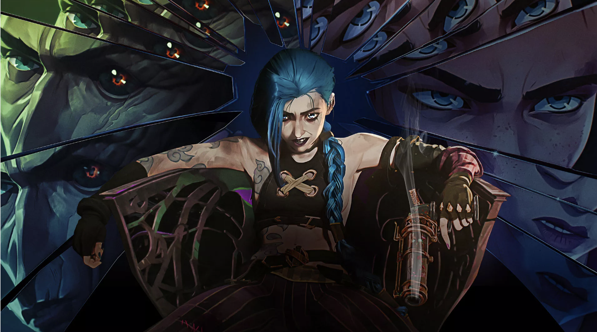
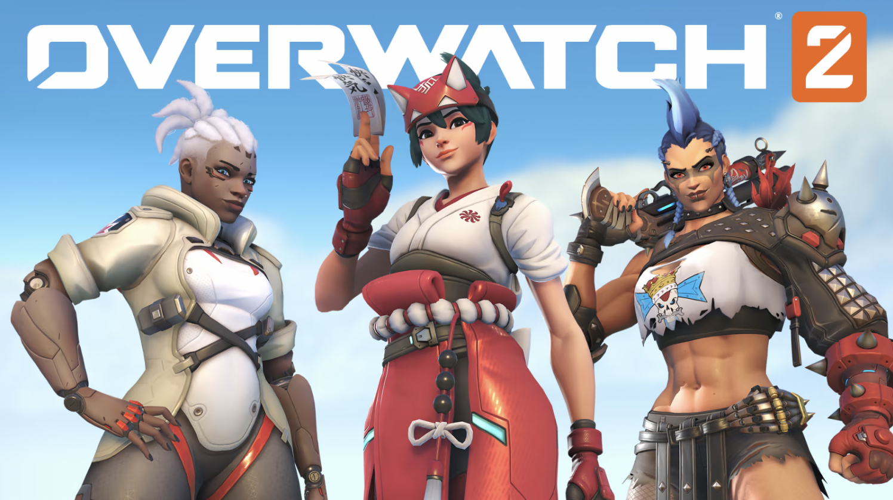

By Maddie Demlow
published on

In November 2021, Riot released a groundbreaking series. Arcane was something new, something refreshing in the animation industry and for viewers. The show is based off the game League of Legends, released back in 2009. Not only does the show have a great story plot, it also brings more depth to the lore of the game. We get more information on key characters, or "champions" in the game, including Caitlyn, Vi, Jinx, Ekko, and others. I'll be honest, watching this beautiful show made me play the game. Now, the animation of the show was quite unique in itself. Fortiche really worked hard to create a distinctive style, combining 2D and 3D elements to create what we see on screen. If you want to learn more about the animation in depth, you can watch Bridging the Rift on YouTube. Furthermore the music is what tops off this incredible series. With all the elements that went into the first season, no wonder it took six years to make (yes, six)! Enemy by Imagine Dragons feat. J.I.D was playing on radio stations everywhere, making it a hit song. Some of my favorite songs from the soundtrack are Playground by Bea Miller and Guns for Hire by Woodkid. You can listen to the soundtrack on music streaming services or on YouTube. Overall, these are just some reasons why you should watch Arcane.
By Maddie Demlow
published on

Overwatch 2 was one of the biggest game launches this month. It came out just last week, with a brand new support character, Kiriko. Now with a big game launch always comes downsides. Funny enough, many people posted to social media (TikTok, Twitter) posted about having a 20,000 person queue just to get on the servers to get into the game. I would have expected that from a popular game since before the release, Blizzard shut down Overwatch servers until they released the sequel game. I think that was a mistake on their part, and if that wasn't enough... well, people were complaining about how they weren't able to play because they had a prepaid phone plan. Even my friends were complaining about it. I hadn't played the first Overwatch game (mainly because I didn't have anything to play it on) but I was convinced to get it and honestly, I'm impressed. The characters in the game are designed beautifully. I should probably mention that this would also be the first FPS game I've ever played, and getting the hang of it was hard because unfortunately, I play it on a Switch Lite. If other people were considering getting the game, I'd recommend getting the game on PC or other consoles like Playsation to make it more user-friendly. Since the text showed up so small on the screen, I (embarassingly) had to Google how to melee a bot in the tutorial. All things aside, my first impression of the game was that it was fun!